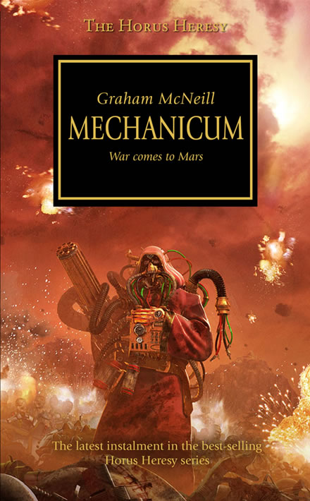

MECHANICUM

Author: Graham McNeill
Format: Novel
As Horus's rebellion reaches Mars, agents of the Warmaster try to turn the forges and Titan Legions against each other. Control of the Red Planet could decide who can arm the armies in the coming war.
Introduction reviewed against Black Library’s description on 2026-09-27. The publisher page may contain spoilers.
Publication facts: publisher source, checked 2026-09-26.
Open this work in the interactive Archive to track reading progress and explore related works.